Project Overview
ChronoSwap is a time-loop puzzle game created for the Game Makers Toolkit 2025 Game Jam. Players solve spatial and logic-based challenges by recording their actions, rewinding time, and cooperating with past versions of themselves.
Each rewind spawns a ghost player that faithfully replays previously recorded actions, allowing players to stack interactions across multiple timelines. The core challenge lies in planning movement, timing interactions, and managing multiple simultaneous loops.
My Role
I was responsible for designing and implementing the core recording, rewind, and looping systems . This included building the frame-based player recorder, ghost playback logic, loop management, and ensuring animation and interaction consistency across timelines.
My focus was on creating a system that was deterministic, memory-safe, and flexible enough to support complex puzzle interactions while remaining performant during repeated rewinds.
Key Technical Highlights
- Player Action Recording: Records player position, rotation, animation state, and interactions at 60 FPS for precise and deterministic playback.
- Ghost Playback System: Ghost players replay recorded frames with interpolation, accurately reproducing movement and interactions across timelines.
- Rewind Mechanic: Rewinding resets the player while spawning ghosts that automatically repeat prior actions, enabling layered puzzle-solving.
- Loop Management: A centralized LoopManager handles ghost instantiation, cleanup, and loop transitions while limiting active ghosts for clarity and performance.
- Physics & Interaction Sync: Interaction replay uses radius checks and interactable state handling to ensure consistency across multiple timelines.
- Animation Fidelity: X/Y movement speeds and sprite flipping are recorded and replayed to preserve visual continuity during ghost playback.
System Breakdown
Frame-Based Player Recording
The rewind system records player state at a fixed 60 FPS, capturing only essential movement, animation, and interaction data. This lightweight frame snapshot approach allows accurate playback while keeping memory usage predictable across repeated loops.
Why it’s done this way
- Recording minimal frame data avoids storing raw input history or full physics state.
- Fixed-rate sampling (60 FPS) guarantees deterministic rewind and ghost playback.
- Explicit animation parameter capture prevents visual desync during playback.
- Bounded memory usage allows repeated time loops without runtime allocation spikes.
How it works
-
PlayerRecordingFrame
- Stores position (
Vector3), rotation (Quaternion). - Records animator X/Y movement speeds and sprite flip state.
- Captures interaction input for deterministic replay.
- Contains only the minimum data required to reproduce player intent and visuals.
- Stores position (
-
Recording loop
- Runs in
FixedUpdateat 60 FPS for consistent timing. - Recording is disabled during rewind playback to prevent data corruption.
- Runs in
Memory Characteristics
-
Per-frame size:
- Position (
Vector3) — 12 bytes - Rotation (
Quaternion) — 16 bytes - Animation parameters & flags — ~8 bytes
- Total raw data: ~36 bytes per frame
- Including C# object overhead: ~64 bytes per frame
- Position (
-
Per 30-second loop:
- 60 FPS × 30 seconds ≈ 1,800 frames
- ~64 bytes × 1,800 frames ≈ ~115 KB per recording
-
Memory safety:
- Recordings are explicitly cleared after rewind completion.
- All frame lists are released on object destruction.
- Prevents memory accumulation across repeated loops.
Code Snippets
PlayerRecordingFrame– lightweight per-frame data container.RecordFrame()– captures and stores frame snapshots.ClearRecording()/OnDestroy()– enforces bounded memory usage.
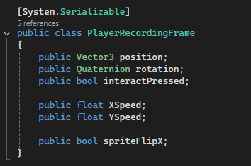
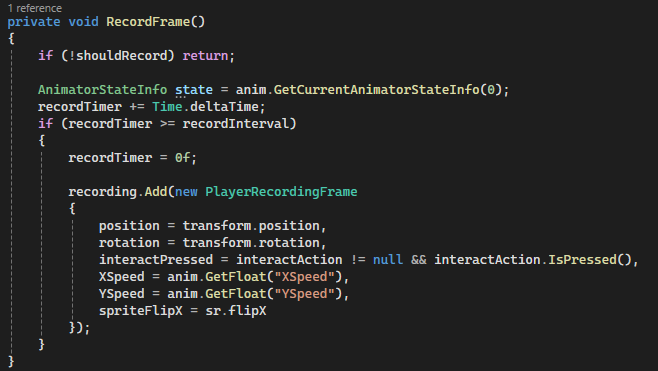
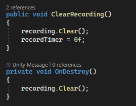
Loop Management & Ghost Lifecycle
The LoopManager orchestrates the player’s time loop, handling rewind transitions, ghost instantiation, and loop resets. It ensures each loop is deterministic, memory-safe, and visually coherent for multi-timeline puzzles.
Why it’s done this way
- Centralized loop logic keeps timing, rewinds, and ghost management consistent.
- Limits the number of active ghosts to avoid clutter and performance drops.
- Ensures seamless transitions between player and ghost playback states.
- Memory-conscious: old recordings and ghost objects are cleared on loop reset.
How it works
-
Loop timing:
- Tracks elapsed time per loop using
loopTimer. - Triggers rewind and ghost spawning when
loopDurationis reached.
- Tracks elapsed time per loop using
-
Ghost lifecycle:
- Player recording is cloned to create a ghost at loop end.
- Ghosts replay the recorded frames with interpolation for smooth motion.
- Old ghost objects are destroyed if the maximum ghost limit is reached.
-
Rewind coordination:
- Player and ghosts enter a rewind state simultaneously.
WaitUntilensures rewinds complete before new ghost playback begins.- Recording resumes automatically after rewind completion if under ghost limit.
-
Memory & safety:
- Recordings are cleared from the player recorder after spawning a ghost.
- Ghost lists are cleared on level reset or destruction.
- Prevents unbounded memory growth across repeated loops.
Code Snippets
Update()– tracks loop time and triggers rewind.HandleLoopTransition()– coordinates rewind, ghost creation, and playback.ResetLevel()– cleans up ghosts, recordings, and resets the player.activeGhosts&ghostRecordings– store runtime ghost state for management.
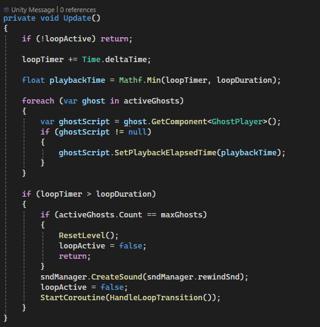
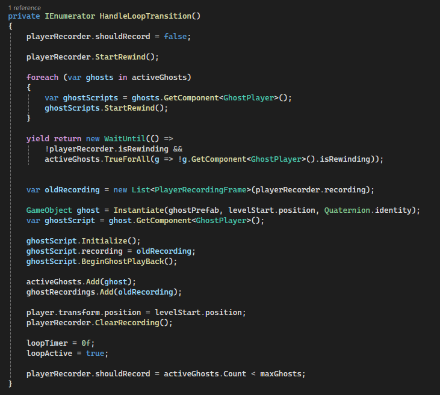
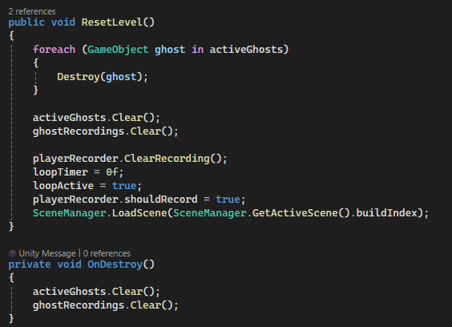
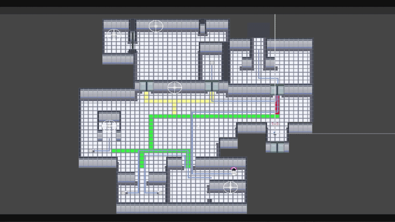
Ghost Playback & Rewind Execution
Each rewind spawns a GhostPlayer that replays a previously recorded timeline. Ghosts interpolate between recorded frames to ensure smooth movement, accurately replay interactions, and remain visually synchronized with player animations.
Why it’s done this way
- Frame interpolation prevents jitter caused by discrete recordings.
- Playback is time-driven rather than frame-driven for consistency.
- Ghosts are physics-isolated to avoid unintended interactions.
- Interaction replay ensures puzzles remain deterministic.
How it works
-
Time-based playback:
- Playback uses an elapsed time counter divided by a fixed interval.
- Base frames are calculated dynamically to support interpolation.
-
Frame interpolation:
- Position and rotation are interpolated using
Lerp. - Animation parameters (X/Y speed) are smoothly blended.
- Sprite flipping preserves directional intent.
- Position and rotation are interpolated using
-
Interaction replay:
- Ghosts replay recorded interaction presses.
- Radius-based checks ensure correct interactable selection.
- State tracking prevents duplicate presses within a single frame.
-
Ghost rewind support:
- Ghosts themselves can rewind during loop resets.
- Rewind traverses recorded frames in reverse order.
- Playback resumes automatically after rewind completion.
Collision & Safety
- Ghosts are assigned to a dedicated physics layer.
- Ghost–player and ghost–ghost collisions are ignored.
- Rigidbodies are set to kinematic to avoid physics drift.
Code Snippets
LateUpdate()– interpolated playback loopHandleRewind()– reverse traversal of recorded framesTryInteract()– deterministic interaction replaySetGhostLayerCollision()– physics isolation
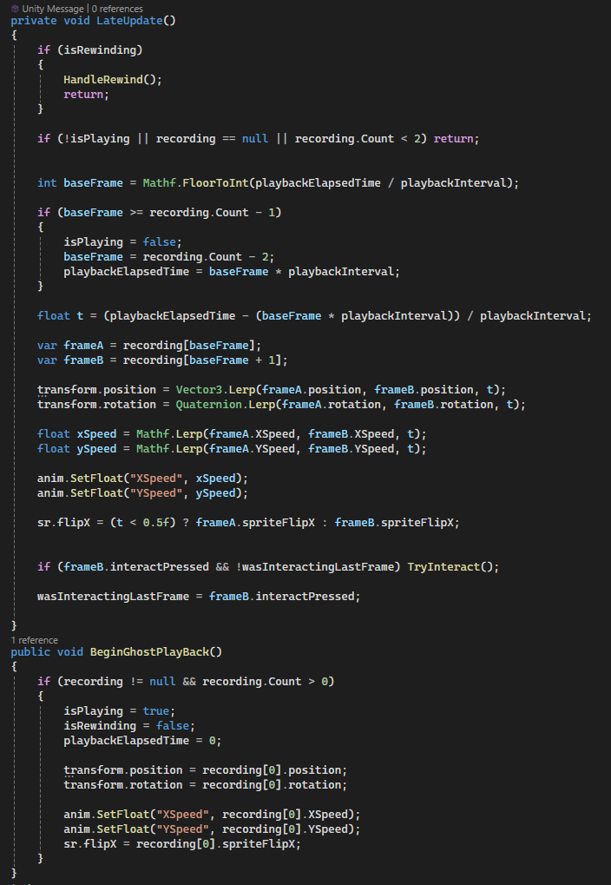
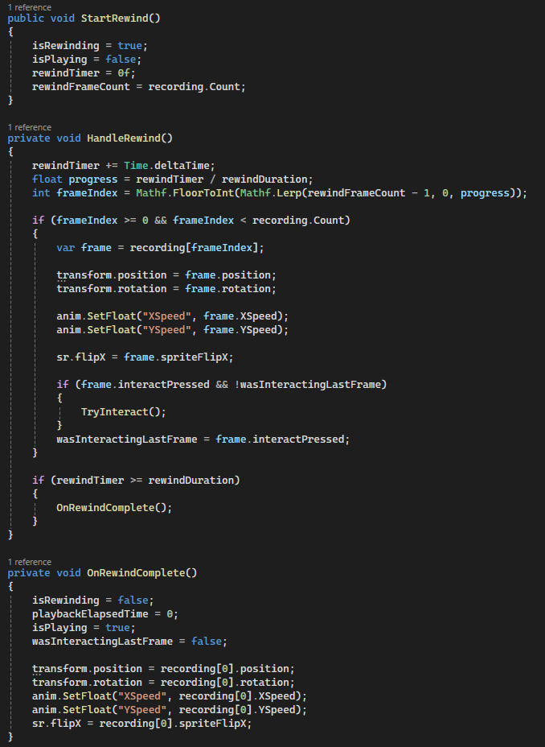
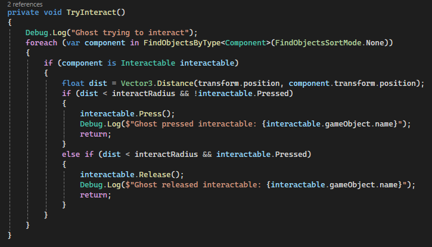
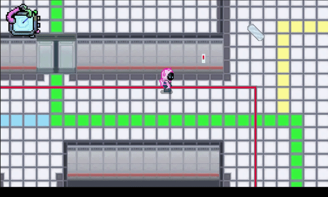
Interactables & Puzzle Pieces
ChronoSwap’s puzzles are built around interactable objects such as buttons, pressure plates, and switches. These objects communicate with targets like mirrors, lasers, and doors to create layered puzzle mechanics that respond to both the player and ghost timelines.
Why it’s done this way
- Abstract interactables decouple input (press/release) from puzzle effects (doors, mirrors, lasers).
- Supports multi-timeline consistency: ghosts can trigger the same interactions as the player.
- Visual feedback via sprite changes reinforces player understanding of puzzle state.
- Audio feedback provides intuitive cues for successful interaction.
How it works
-
Interactable Types:
Button– single-press triggers an effect with audio feedback.Switch– toggles target states; can remain on or off.Plate– pressure-sensitive; automatically releases when no objects are pressing.
-
Targets:
Door– opens or closes with collision and visual feedback.Mirror– rotates to reflect lasers when activated.LaserEmitter– fires a laser beam that can activate other interactables via raycast hits.
-
Ghost & Player Interaction:
- Interactables track pressing objects (player or ghosts) to handle multi-timeline interactions.
- Pressure plates and lasers maintain state per frame for deterministic puzzle solving.
-
Visual & Audio Feedback:
- Sprites switch between
onSpriteandoffSpritestates. - Sounds are played for each type: button press, switch flip, plate depression, door opening/closing.
- Sprites switch between
Code Snippets
Press()/Release()– handle state change and trigger effects.HandleInteractableType()– calls target-specific logic based on type.ToggleDoor(),ToggleRotation(),ToggleLaser()– execute the puzzle effect.LaserEmitter– raycasts with reflection and triggers interactables it hits.
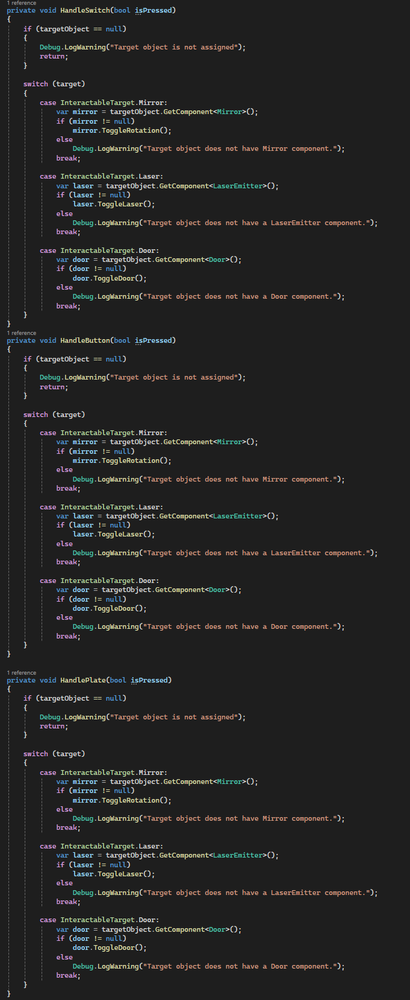
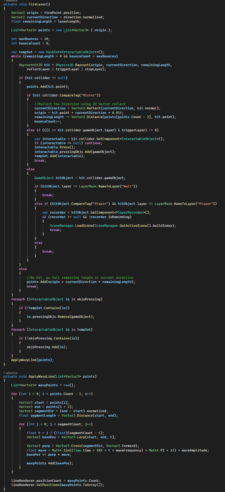
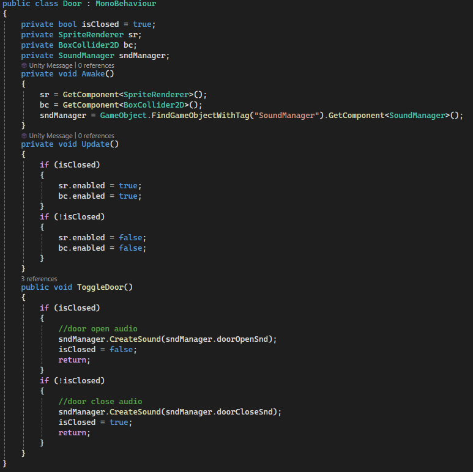
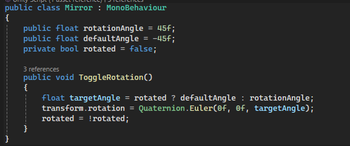